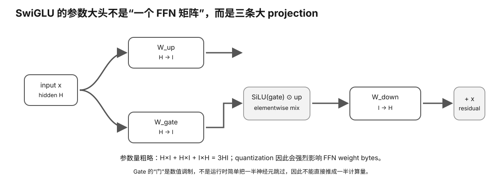

Transformer Anatomy · L0→L1
SwiGLU / FFN：为什么 Attention 之外还有一大块参数和计算？
很多初学者把 Transformer 等同于 attention，但每层里的 Feed-Forward Network（FFN/MLP）通常同样是巨大的参数与计算来源。理解 gate/up/down 三个投影，你才能读懂模型参数量、权重字节、矩阵 shape，以及为什么 MoE 会从这里分叉。
Prerequisite Check
你应知道一个 decoder block 包含 attention 与 FFN 两个主要子层，也知道矩阵权重会占模型文件/显存。
真实问题：一个 7B 模型的参数为什么不都在 attention？
Attention 需要 Q/K/V/O 投影；FFN 则通常把 hidden vector 扩展到更大的 intermediate dimension，再压回 hidden size。这个扩展层可以非常宽，因此 FFN 权重占比很可观。
1. 最简单 FFN
x (hidden size H) → W_up: H → I → activation → W_down: I → H → residual add
I（intermediate size）通常明显大于 H，所以两块大矩阵会带来大量参数与内存流量。
2. SwiGLU 为什么多了一个 Gate？
现代 LLM 常用 gated FFN。粗略结构：
up = x · W_up gate = x · W_gate mixed = SiLU(gate) ⊙ up out = mixed · W_down
也就是两个 H→I 投影，一个经过 SiLU 形成门控，再逐元素相乘，然后 I→H。

3. 参数量粗算
忽略 bias 等小项：
FFN params per layer ≈ H×I (up) + H×I (gate) + I×H (down) = 3HI
如果只看 attention heads 而忽略 I，就会严重低估参数、权重字节与 decode 内存流量。
Worked Example：H=4096，I=11008
仅用于公式练习：
3 × 4096 × 11008 ≈ 135 million parameters per FFN layer
若模型有很多层，这部分会迅速累积。量化后每参数字节下降，但三个大矩阵仍然存在。
4. 为什么 FFN 对 Prefill 与 Decode 的形状不同？
Prefill 同时有很多 token，W_up/W_gate/W_down 更像大 GEMM；decode 单 token/小 batch 时，矩阵的一边变得很窄，更容易受权重读取与 kernel overhead 影响。
因此 FFN 同样参与“PP compute-heavy、TG memory-heavy”的两阶段差异。
5. Gate 的语义不是“把一半神经元关掉就省一半计算”
标准 dense SwiGLU 仍需要计算 up 和 gate 投影，然后逐元素门控。它不是稀疏 expert routing。不要把 gating 这个词与 MoE router 混淆。
6. Quantization 对 FFN 权重意味着什么？
W_up/W_gate/W_down 是大型权重矩阵，量化可显著降低文件/显存字节。但具体 kernel 仍要解包/dequant/矩阵运算，因此：
smaller weight bytes → potentially less memory traffic but → quant math/layout/kernel overhead also changes
这解释了为什么更低 bit 通常能帮助 memory-bound decode，却不保证所有硬件/shape 都等比例提速。
7. FFN 与 MoE 的连接
MoE 可以粗略理解成：不再每层只有一个 dense FFN，而是拥有多个 expert FFN，由 router 为 token 选择其中少数几个。
dense FFN: every token → same FFN MoE: token → router → selected expert FFN(s)
因此下一节的“总参数很大但每 token active 参数较小”，主要就发生在 FFN/expert 这一侧。
Why it matters
- 解释模型参数量为什么大量来自 FFN，而非只有 attention。
- 帮助从 config 的 hidden/intermediate size 推权重规模。
- 解释量化为什么会显著影响 decode memory traffic。
- 为理解 MoE resident weights vs active weights 建立基础。
常见误区
- “Transformer 的大头全是 attention”——FFN 往往是主要参数块之一。
- “SwiGLU gate 就是稀疏 routing”——dense gate 与 MoE router 不同。
- “Q4 让 FFN 计算量变成四分之一”——字节减少不等于运算/时间线性减少。
- “intermediate size 只是训练细节”——它直接影响权重与推理工作量。
小实验
拿一个公开 model config，记录 layers、hidden size、intermediate size。粗算 dense SwiGLU FFN 参数，再与总参数量比较。然后把 FP16、8-bit、4-bit 的理想纯权重字节按比例算出。
预期观察：你会看到 intermediate size 对权重预算极其重要，但实际 GGUF 文件会因量化 metadata/分块等与理想位宽公式有差距。
无 GPU 路径
本课全部可手算。真实 kernel 性能以后再测。
排错
- 参数粗算和模型总数差很多：还有 attention、embedding、norm、tie/untied output 等。
- 量化文件大小不等于参数×bits/8：考虑 quant block metadata、tensor dtype 混合。
- FFN profiler 热点异常：检查 fusion、quant kernel、batch/shape、memory bandwidth。
Retrieval Practice
- 标准 dense FFN 与 SwiGLU 的结构差别是什么？
- 为什么 SwiGLU 每层粗略是 3HI 参数？
- intermediate size 为什么是模型硬件预算的重要 config？
- Gate 为什么不等于 MoE 稀疏 routing？
- 量化 FFN 权重为何可能帮助 decode，但不会保证线性加速？
- Prefill 与 decode 的 FFN matrix shape 为什么不同？
Decision Rule
读模型硬件需求时，不只看参数总数；至少读取 hidden size、intermediate size、layers、attention/KV 结构。量化收益必须区分“权重字节减少”与“实际 kernel 速度变化”。
Transfer
下一节 MoE 把多个 FFN expert 放进同一层。继续追踪三件事：总 resident 权重、每 token active expert、expert routing/数据移动。
把 FFN 看成“权重流量 + 大矩阵”而不是一个激活函数
hidden x
├→ gate projection ─→ activation ┐
└→ up projection ────────────────×
↓
down projection
↓
residual
对硬件判断最重要的是：SwiGLU 通常包含多组大权重矩阵。模型 decode 时这些权重会反复参与每个 token 的计算；prefill 时更大的 token batch 又更容易形成高利用率 GEMM。于是同一个 FFN 可以在两阶段呈现不同 roof。
Worked Example：为什么 intermediate size 会直接改变模型体积与每-token 工作？
对 hidden size H、intermediate size I 的 dense SwiGLU，粗略只看三组投影，单层 FFN 参数规模约为：
gate: H × I up: H × I down: I × H total ≈ 3 × H × I parameters per layer
这不是精确模型总参数公式，但足以解释：I 增大时，权重容量与 FFN 计算都明显增加。若量化位宽降低，权重 bytes 会下降；但实际 kernel 是否高效，还要看 packing、解包、矩阵路径与 backend。
Fusion 为什么是性能变量？
如果 gate、activation、elementwise multiply、downstream layout conversion 被拆成很多小 kernel，就会增加中间张量读写和 launch/synchronization。Fusion 的目标常是减少这些中间 traffic，而不改变模型语义。
因此比较 fused/non-fused path 时，必须固定 model artifact、quant、输入 shape 和输出质量；不能同时换 backend 或模型版本。
Experiment Evidence
- exact model config 中 H/I/layers；
- 目标 quant/artifact identity；
- prefill 与 decode 分开的 PP/TG；
- 如果 profiler 可用：FFN kernel 数、主要 kernel、memory/compute 迹象；
- 改变 fusion/kernel path 时的 correctness/quality gate。
无 GPU 时，用两个不同 intermediate size 的 toy config 计算 FFN 参数比例，并预测对 artifact size 与每-token work 的方向性影响。
Interpretation Branches
- PP 提升明显、TG 提升有限：可能大矩阵路径获益更大，decode 仍受权重流量限制。
- 量化更小但 TG 不升：检查解包/kernel/fallback，不能只看 bytes。
- fusion 后更快但质量变化：先视为 correctness failure，不接受性能结论。
- FFN 占比高：模型结构 H/I/layers 可能比“attention 优化”更值得关注。
What this lesson does NOT prove
SwiGLU 并不意味着某种固定硬件需求或固定性能优势。这里的 3HI 是结构级近似；exact model 还可能有 bias、shared experts、MoE、特殊投影或不同定义，最终以 exact config/source 与 artifact 为准。
完成证据
完成本课后，保留一份 learner-owned completion artifact，至少包含：
- 用自己的话画出或写出本节最小 mental model，并标出关键变量/资源层；
- 完成本节小实验、worksheet 或无硬件 fallback；有真机时链接 raw Evidence，没有真机时明确标 L0 / DOCUMENTED / DEFERRED-HARDWARE；
- 写一条绑定 Evidence 的 PASS / FAIL / UNKNOWN / BLOCKED 结论，说明它怎样影响本地 LLM 的容量、性能、兼容、成本或风险判断；
- 写一句明确 non-claim：这份证据还不能证明什么。
只写“看完了”或抄规格表不算完成。课程要的是可复查的推理产物，而不是阅读打卡。